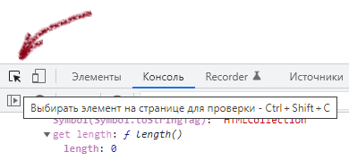

Иногда, при групповой работе с письмами, в стандартном Веб-интерфейсе GMail необходимо иметь возможность помечать все письма на текущей странице. Проблема в том, что такой функции интефейс не предоставляет, пункт выпадающего списка действий "добавить пометку" не работает, и приходится "прокликивать" все галочки вручную. А это очень неэффективно и отнимает много времени.
Можно ли как-то автоматизировать даннй процесс? Да! И это можно сделать как в браузере Google Chrome, так и в Firefox. Достаточно воспользоваться консолью разработчика, каторая в случае Chrome доступна через меню Дополнительные инструменты -> Инструменты разработчика (Ctrl+Shift+I). В Firefox примерно так же.
Итак, вначале нужно выяснить как в HTML-коде выглядит галка. Надо нажать в левом верхнем углу иконку со стрелочкой, чтобы выбрать нужный элемент.

После чего выбрается любая галка возле письма. Просмотрев как оформлены галки, можно отметить, что они все имеют имя "t":
<input type="checkbox" name="t" value="13d97b9efd4dec7b">
...
<input type="checkbox" name="t" value="13d9ce7ee11fc8fe">
Этого достаточно, чтобы сделать код, который их будет прокликивать. Для этого необходимо переключиться на вкладку Console (в русской локализации - Консоль), и ввести следующий код:
elements = document.getElementsByName('t');
for (i = 0; i < elements.length; i++) {
elements[i].checked="checked";
}
После нажатия Enter все галочки возле каждого письма окажутся включенными.
Чтобы повторно выполнить данный код на новой странице, можно в консоли на клавиатуре нажать курсорную клавишу "Стрелка вверх", в результате чего в консоли появится предыдущая команда. Нажатием клавиши Enter она выполняется.
Дальнейшая автоматизация - это воспользоваться плагином GreaseMonkey, которое будет само добавлять на страницу Gmail кнопочку, при нажатии которой будет выполняться вышеуказанный JavaScript-код.